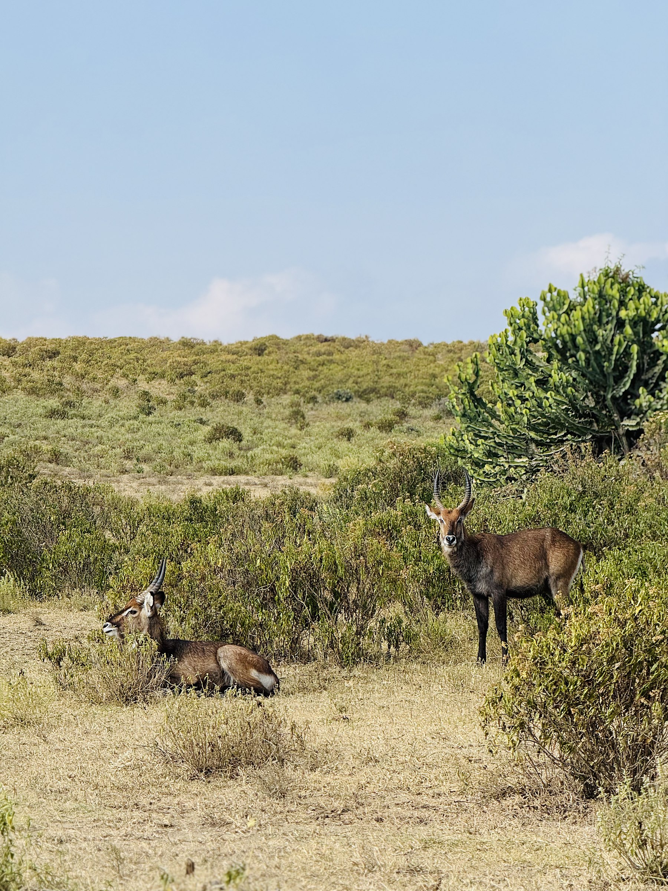
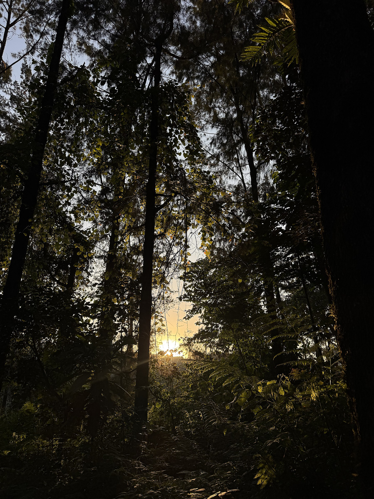
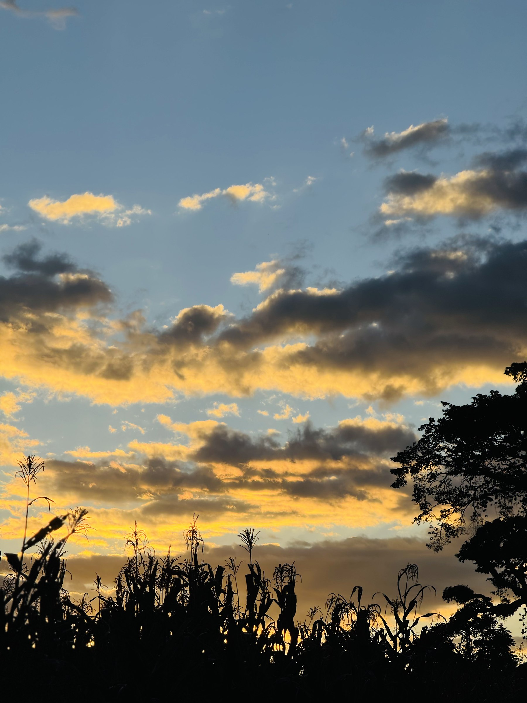
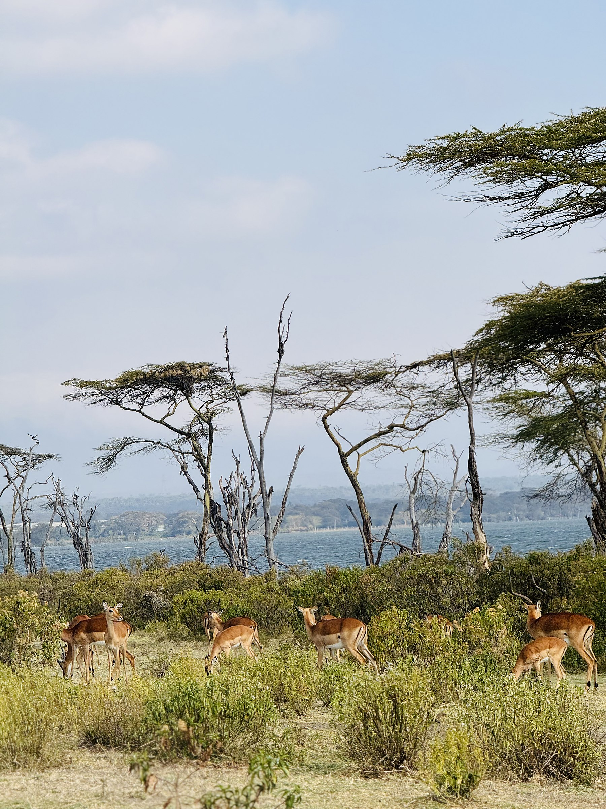
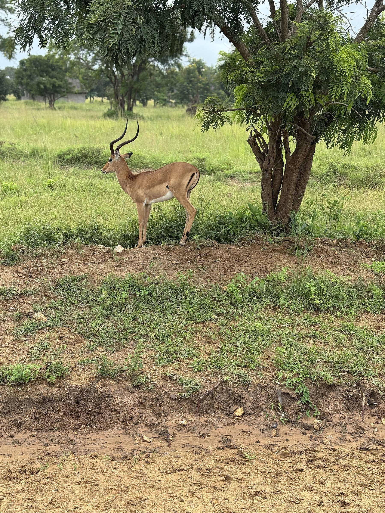

About Ganache Safaris
A locally owned and operated tour company, passionate about showcasing Tanzania's natural beauty through ethical and immersive travel.
Born from a love of Tanzania
Ganache Safaris is a locally owned and operated tour company, passionate about showcasing Tanzania's natural beauty through ethical and immersive travel.
We are based in Arusha, the town at the foot of Mount Meru that most northern safaris begin from. With years of field experience, our team of expert guides, planners and hospitality professionals delivers tailor-made safaris that celebrate wildlife, respect local traditions and prioritise sustainability.
We know the parks in different seasons, the quiet corners away from the crowds, and the difference a good guide makes to a single day — and we plan every trip by hand, at a human pace, with time to truly take it in.


Expert guides, planners and hosts
A trip is only as good as the people behind it.
Our fluent local guides offer genuine cultural insight and storytelling, drawn from a life lived in this landscape. From your first message to the last day of your journey, you deal with people who answer quickly and know the ground. We'd rather plan fewer trips well than many carelessly.
Why travel with us
Travel that respects the place
We believe travel should benefit everyone — from the traveller to the communities visited. Ganache Safaris supports local economies, employs local guides, partners with community projects, and operates with a strong commitment to conservation and ethical wildlife practices.
We choose eco-friendly accommodations, promote low-impact travel, and actively contribute to education and healthcare projects in the regions we visit.


Let's plan something together
Tell us what you have in mind — we'll take it from there.